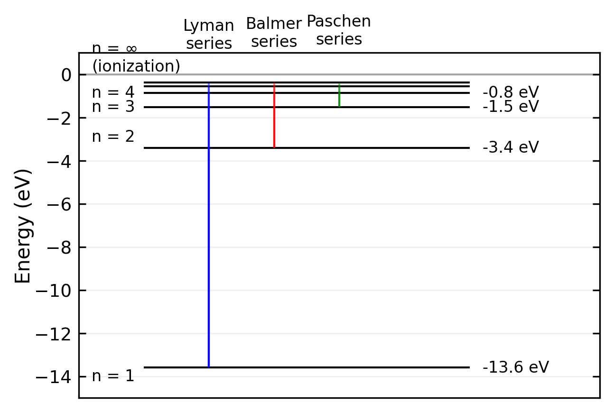

The Structure of Atoms and the Bohr Model
Having already explored the Plum Pudding model and Rutherford’s nuclear atom model through the Geiger-Marsden experiments, we know that the atom consists of a tiny, dense, positively-charged nucleus (\(R_{\mathrm{C}} < 10^{-14} \; \mathrm{m}\), charge \(Q = Z\cdot e\)) containing most of the atomic mass, surrounded by a much larger electron cloud (\(10^{12}\) to \(10^{15}\) times the nuclear volume). This electron cloud contains \(Z\) electrons, each with charge \(-e\), but contributes negligibly to the total mass.
A key question emerges about the structure of this electron cloud: are the electrons statically distributed or in motion? A static distribution is unstable due to electrostatic attraction to the nucleus. However, moving electrons present their own puzzle - classical electrodynamics predicts that accelerating charges should continuously emit electromagnetic radiation, which would cause them to spiral into the nucleus. This contradicts the observed stability of atoms. Understanding this paradox requires us to consider quantum mechanical effects.
The Quantum Origin of Atomic Stability
A fundamental question in atomic physics is why electrons don’t spiral into the nucleus due to electromagnetic attraction. The answer lies in Heisenberg’s uncertainty principle, which provides a natural explanation for atomic stability.
Position-Momentum Uncertainty
Consider a hydrogen atom where the electron is confined within a radius \(a\). By definition, the uncertainty in position must be at most the atomic radius:
\[ \Delta r \le a \]
The uncertainty principle then requires a minimum uncertainty in momentum:
\[ \Delta p_r \ge \frac{\hbar}{a} \]
Since this represents the minimum possible momentum uncertainty, the actual momentum must be at least this large:
\[ p \ge \frac{\hbar}{a} \]
Energy Considerations
This quantum mechanical constraint on momentum leads to a minimum kinetic energy:
\[ E_{\mathrm{kin}} = \frac{p^2}{2m} \ge \frac{\hbar^2}{2ma^2} \]
Meanwhile, the classical electrostatic potential energy is:
\[ E_{\mathrm{pot}} = - \frac{e^2}{4 \pi \varepsilon_0 a} \]
The total energy is therefore bounded by:
\[ E \ge \frac{\hbar^2}{2ma^2} - \frac{e^2}{4 \pi \varepsilon_0 a} \]
Finding the Ground State
The atom will naturally settle into its lowest possible energy state. We can find this by minimizing the total energy (\(\mathrm{d}E/\mathrm{d}a = 0\))
\[ \frac{dE}{da} = -\frac{\hbar^2}{ma^3} + \frac{e^2}{4 \pi \varepsilon_0 a^2} = 0 \]
which gives:
\[ a_{\mathrm{min}} = \frac{4 \pi \varepsilon_0 \hbar^2}{m e^2} = a_0 \]
This minimum radius exactly matches the Bohr radius \(a_0\)! The corresponding minimum energy is:
\[ E_{\mathrm{min}} = - \frac{m e^4}{8 \varepsilon_0^2 h^2} = - Ry^{\ast} \]
which is precisely the ground state energy (Rydberg energy) that we’ll encounter in the Bohr model.
Physical Interpretation
The stability of atoms emerges from a fundamental quantum mechanical balance:
- If the electron gets too close to the nucleus (\(a < a_0\)), the uncertainty principle forces its kinetic energy to increase dramatically (\(\sim 1/a^2\))
- This increase outpaces the decrease in potential energy (\(\sim 1/a\))
- The result is a stable minimum at the Bohr radius
This quantum mechanical explanation of atomic stability, derived purely from the uncertainty principle and electrostatics, provides a beautiful preview of the more detailed atomic models we’ll explore next.
Atomic spectra
In 1859 Kirchhoff and Bunsen observed that atoms absorb light only for particular values of the wavelength. Moreover these wavelength values are specific for the particular kind of atoms and form the absorption and emission spectra of these atoms. Early instruments for recording spectra made use of a prism as diffracting element and a photo plate for recording. The prism gave rise to a rainbow-colored stripe at the plate and narrow dark lines appeared exactly at those positions that correspond to the particular wavelengths of atom absorption. Thus, the photo plates showed dark lines at these positions and those compositions of lines were called line spectra. On the basis of further experiments one was able to state:
For every wavelength at which an atom absorbs light, emission of light is possible if the atom was previously supplied with enough energy
The absorption and emission spectra are specific for every kind of atom. Thus, one is able to determine the chemical element absorbing or emitting the radiation on the basis of the line spectrum.
The values of wavelength (spectral lines) are not arbitrarily narrow. They rather exhibit a distribution of intensity. This indicates that atoms do not emit strictly monochromatic radiation.
In 1885 Balmer discovered that the emission spectrum of hydrogen is composed of a series of lines that obey a specific law, namely
\[ \frac{1}{\lambda_{\mathrm{k}}} = R_{\mathrm{y}} \left( \frac{1}{n_1^2} -\frac{1}{n_2^2} \right) \mathrm{.} \]
In this equation \(R_{\mathrm{y}}\) denotes the Rydberg constant (\(R_{\mathrm{y}} = 109 \, 678 \; \mathrm{cm}^{-1}\)) and \(n_1\) and \(n_2\) adopt only the integers \(n_1 = 2\) and \(n_2 = 3,4,5 \ldots\). This series of lines with \(n_1 = 2\) is called Balmer series. Later Lyman and Paschen discovered additional series of the hydrogen emission called Lyman series (\(n_1 = 1\) and \(n_2 = 2,3,4 \ldots\)) and Paschen series (\(n_1 = 3\) and \(n_2 = 4,5,6 \ldots\)).

The Bohr model
On the basis of the spectral lines, a number of models for the architecture of atoms were proposed but they were not able to explain all experimental results as a whole. Among them was Bohr’s famous model from 1913. In the framework of this model electrons with mass \(m_{\mathrm{e}}\) propagate with a velocity \(v\) at a circular orbit with radius \(r\) around the center of mass of the nucleus-electron system. This system can be described through the motion of a particle with the reduced mass \(\mu = m_{\mathrm{e}} \cdot m_{\mathrm{n}} / \left( m_{\mathrm{e}} + m_{\mathrm{n}} \right)\) around the center of the Coulomb potential from the nucleus at \(r = 0\). The nucleus bears the charge \(Q = Z \cdot \mathrm{e}\) and the mass \(m_{\mathrm{n}}\), which is much greater than \(m_{\mathrm{e}}\) and gives rise to \(\mu \approx m_{\mathrm{e}}\). From the equilibrium of the centrifugal force and the centripetal force (Coulomb force),
\[ \frac{\mu v^2}{r} = \frac{1}{4 \pi \varepsilon_0} \frac{Z e^2}{r^2} \mathrm{,} \]
we can determine the radius of the orbital
\[ r = \frac{1}{4 \pi \varepsilon_0} \frac{Z e^2}{\mu v^2} \mathrm{.} \]
As long as there are no constraints for the energy of the electron \(\mu v^2 / 2\), the orbit can adopt every possible radius. However, if we describe the electron through a matter wave, then for every stationary state of the atom a corresponding standing wave has to exist. Furthermore, if the wave-like description is supposed to comply with the classical orbit description, then the circumference of the orbital has to be a magnitude of the de Broglie wavelength,
\[ 2 \pi r = n \cdot \lambda_{\mathrm{D}} \mathrm{,} \]
with \(n = 1,2,3, \ldots\) and \(\lambda_{\mathrm{D}} = h/ \left( \mu \cdot v\right)\). As a consequence, the velocity of the electron then reads as
\[ v = n \cdot \frac{h}{2 \pi \mu r} \mathrm{.} \]
Now, we can use the expression for the velocity \(v\) in the equilibrium of forces and calculate the orbit radius under the constraint of stationary states being described through matter waves,
\[ \begin{aligned} r \left(n\right) & = \frac{\varepsilon_0 h^2}{\pi \mu e^2} \frac{n^2}{Z}\\ {} & = a_0 \frac{n^2}{Z} \mathrm{.} \end{aligned} \]
The constant \(a_0\),
\[ \begin{aligned} a_0 & = \frac{\varepsilon_0 h^2}{\pi \mu e^2}\\ {} & = \frac{4 \pi \varepsilon_0 \hbar^2}{\mu e^2}\\ {} & = 5.2918 \cdot 10^{-11} \; \mathrm{m} \end{aligned} \]
represents the Bohr radius, which is the smallest radius of the electron orbit (\(n = 1\)) within a hydrogen atom with \(Z = 1\). Due to the constraint \(2 \pi r = n \cdot \lambda_{\mathrm{D}}\), the radii of the electron orbitals are limited to discrete values. Thus, they are quantized.
Concerning the kinetic energy of an electron \(\mu v^2 / 2\) within a discrete orbit, we can make use of the equilibrium of forces and calculate
\[ E_{\mathrm{kin}} = \frac{1}{2} \, \mu v^2 = \frac{1}{2} \, \frac{1}{4 \pi \varepsilon_0} \frac{Z e^2}{r} = - \frac{1}{2} \, E_{\mathrm{pot}} \mathrm{.} \]
We can see that the kinetic energy of an electron is equal to \(-1/2\) times the potential energy of the electron in the Coulomb potential of the nucleus. The total energy then reads as
\[ E = E_{\mathrm{kin}} + E_{\mathrm{pot}} = - \frac{1}{8 \pi \varepsilon_0} \frac{Z e^2}{r} \mathrm{.} \]
We can further use the expression for the discrete radius \(r = r\left(n\right)\) and get
\[ \begin{aligned} E \left( n \right) & = E_{\mathrm{n}}\\ {} & = - \frac{\mu e^4}{8 \varepsilon_0^2 h^2} \cdot \frac{Z^2}{n^2}\\ {} & = - Ry^{\ast} \cdot \frac{Z^2}{n^2} \mathrm{,}\\ \end{aligned} \]
with the Rydberg energy (Rydberg constant with respect to energy)
\[ \begin{aligned} Ry^{\ast} & = \frac{\mu e^4}{8 \varepsilon_0^2 h^2}\\ {} & = h \cdot c \cdot Ry \mathrm{.} \end{aligned} \]
It is evident that the electron can adopt only particular values of energy \(E_{\mathrm{n}}\), which might be expressed in terms of a quantum number \(n = 1, 2, 3 \ldots\). These stationary energetic states are also called quantum states of the atom and the quantum number \(n\) is called the principal quantum number.
Moreover, it is evident that the energy is negative and approaches \(0\) if the orbital radius approaches \(+\infty\), which corresponds to the principal quantum number approaching \(+\infty\).
Please note:
The particular value of the Rydberg constant depends on the reduced mass of the system electron plus nucleus \(1/\mu = 1/m_{\mathrm{e}} + 1/m_{\mathrm{c}}\). In order to use a general constant one defines the Rydberg constant \(Ry_{\infty}\) for an infinite nucleus mass (\(m_{\mathrm{c}} \longrightarrow \infty\)) with the result \(\mu = m_{\mathrm{e}}\). The Rydberg constant for a finite nucleus mass then is given through \(Ry = Ry_{\infty} \cdot \mu /m_{\mathrm{e}}\), with \(Ry_{\infty} = 109737 \; \mathrm{cm}^{-1}\)
The Bohr model is a semi-classical model. The motion of the electron is treated in the framework of classical mechanics as the motion of a point-like particle within a Coulomb potential plus the additional constraint from the matter wave leading to quantized quantum states.
From the quantized velocity of the electron \(v = n \cdot h / (2 \pi \mu r)\) it follows \(\mu r v = n \cdot \hbar = \left| \vec{L} \right|\). The angular momentum of the electron is also quantized. It can adopt only magnitudes of \(\hbar\). Both conditions, the quantization of the electron orbit circumference \(2 \pi r = n \cdot \lambda_{\mathrm{D}}\) and the quantization of the electron angular momentum \(\left| \vec{L} \right| = \mu r v = n \cdot \hbar\) are identical.
In order to explain the shape of the line spectra we have to state a hypothesis. If a photon is absorbed by an atom, then the atom might go from a lower energetic state \(E \left( n_i \right) = E_{\mathrm{i}}\) to a higher energetic state \(E \left( n_k \right) = E_{\mathrm{k}}\) under the prerequisite of energy conservation,
\[ h \cdot \nu = E_{\mathrm{k}} - E_{\mathrm{i}} \mathrm{.} \]
The spectral series of hydrogen correspond to transitions between different energy levels. The main series are:
| Series Name | Initial State (\(n_i\)) | Final States (\(n_k\)) | Spectral Region |
|---|---|---|---|
| Lyman | 1 | 2,3,4,… | Ultraviolet |
| Balmer | 2 | 3,4,5,… | Visible |
| Paschen | 3 | 4,5,6,… | Infrared |
| Brackett | 4 | 5,6,7,… | Infrared |
| Pfund | 5 | 6,7,8,… | Far Infrared |
The energy of the photon is used to compensate the energy difference between state \(E_{\mathrm{k}}\) and state \(E_{\mathrm{i}}\), \(\Delta E = E_{\mathrm{k}} - E_{\mathrm{i}}\). From the relation \(E_{\mathrm{n}} = - Ry^{\ast} \cdot \frac{Z^2}{n^2}\) we obtain
\[ \nu = \frac{Ry^{\ast}}{h} Z^2 \left( \frac{1}{n_{\mathrm{i}}^2} - \frac{1}{n_{\mathrm{k}}^2} \right) \mathrm{.} \]
With the aid of \(\nu = c / \lambda\) as well as \(Ry^{\ast} = Ry \cdot c \cdot h\) we get further
\[ \frac{1}{\lambda} = Ry \cdot Z^2 \left( \frac{1}{n_{\mathrm{i}}^2} - \frac{1}{n_{\mathrm{k}}^2} \right) \mathrm{,} \]
which is the general equation for the lines of a line spectrum and comprises the equation stated by Balmer for the special case of hydrogen (\(Z = 1\)).

In summary we can state:
- Electrons propagate in circular orbitals around the nucleus. The radii of the orbital are quantized and the particular radius increases quadratically with the principal quantum number \(n\),
\[ r_n = \frac{a_0}{Z}\cdot n^2 \mathrm{.} \]
The radii are inversely proportional to the atomic number.
Every quantum state characterized through the quantum number \(n\) is associated with a particular negative energy \(E_{\mathrm{n}}\),
\[ E_{\mathrm{n}} = - Ry^{\ast} \frac{Z^2}{n^2} \mathrm{.} \]
The energy for \(n \longrightarrow \infty\) and thus \(r \longrightarrow \infty\) is set as \(0\). The difference between \(E_{\mathrm{n}}\) and \(E_{\infty}\) is the ionization energy (the energy the electron needs to escape from the Coulomb potential).
Through absorbing a photon of energy \(h\cdot \nu\) the atom goes from a lower energetic state \(E_{\mathrm{i}}\) into a higher energetic state \(E_{\mathrm{k}}\), if conservation of energy is fulfilled.
The Bohr-Sommerfeld Model: A Quantum Mechanical Bridge
The Bohr-Sommerfeld model (1916) represented a crucial extension of Bohr’s atomic theory by incorporating relativistic effects and elliptical orbits through Wilson-Sommerfeld quantization rules.
Orbital Extensions
Rather than restricting electrons to circular orbits, Sommerfeld introduced elliptical orbits characterized by their semi-major axis \(a\), semi-minor axis \(b\), and eccentricity \(e = \sqrt{1-\frac{b^2}{a^2}}\). This generalization required additional quantum numbers beyond Bohr’s principal quantum number: the azimuthal quantum number \(l\) for angular momentum, the magnetic quantum number \(m\) for spatial orientation, and a relativistic quantum number \(nr\) for radial motion.
Quantization Rules
The cornerstone of the theory lies in the generalized Wilson-Sommerfeld quantization condition. For any periodic coordinate \(q_i\) and its conjugate momentum \(p_i\):
\[\oint p_i dq_i = n_ih\]
This manifests specifically in two key forms:
Radial quantization: \[\oint p_r dr = n_rh\]
Angular quantization: \[\oint p_\phi d\phi = n_\phi h\]
Relativistic Energy Levels
The model produced a refined energy level formula incorporating relativistic effects:
\[E_{n,k} = -\frac{mc^2\alpha^2}{2n^2}\left[1 + \frac{\alpha^2}{n^2}\left(\frac{n}{k} - \frac{3}{4}\right)\right]\]
where α is the fine structure constant, m is electron mass, c is speed of light, and k = n - |j + 1/2| + 1/2.
The model successfully explained several phenomena that Bohr’s original theory could not address, including the fine structure of spectral lines and basic aspects of the Zeeman effect. However, it still fell short of explaining the anomalous Zeeman effect, intensity rules, and electron spin. Despite these limitations, the Bohr-Sommerfeld model served as a vital bridge between early quantum theory and modern quantum mechanics, introducing fundamental concepts like phase space quantization that would prove essential to later developments.
So far the Bohr model can successfully describe the line spectra. However, since electrons are assumed to propagate at circular orbits, they are supposed to permanently irradiate electromagnetic waves. This gives rise to the questions why does the electron not emit radiation and therefore lose energy and collapse into the nucleus? Or why are atoms stable?
Code
# Calculate and plot spectral lines for hydrogen
wavelengths = []
colors = []
# Calculate Balmer series wavelengths (n1=2)
for n2 in range(3, 10):
wavelength = 1/(1.097e7 * (1/4 - 1/n2**2)) # meters
wavelength_nm = wavelength * 1e9 # convert to nm
if 200 <= wavelength_nm <= 1200:
wavelengths.append(wavelength_nm)
colors.append(plt.cm.nipy_spectral(wavelength_nm/1200))
# Calculate Paschen series wavelengths (n1=3)
for n2 in range(4, 10):
wavelength = 1/(1.097e7 * (1/9 - 1/n2**2)) # meters
wavelength_nm = wavelength * 1e9 # convert to nm
if 200 <= wavelength_nm <= 1200:
wavelengths.append(wavelength_nm)
colors.append(plt.cm.nipy_spectral(wavelength_nm/1200))
plt.figure(figsize=get_size(12, 3))
for w, c in zip(wavelengths, colors):
plt.vlines(w, 0, 1.0, color=c, linewidth=1)
plt.xlabel('wavelength [nm]')
plt.ylabel('intensity [a.u.]')
plt.xlim(200, 1200)
plt.ylim(0, 1.2)
plt.show()
Franck-Hertz Experiment
The Franck-Hertz experiment (1914, James Franck, Gustav Hertz) provided direct experimental confirmation of quantized atomic energy levels. The setup uses a vacuum tube containing mercury vapor with three electrodes: cathode, grid anode, and collector. Electrons from a heated cathode are accelerated toward the grid, colliding with mercury atoms.
When electrons reach 4.9 eV, they transfer this energy to mercury atoms through inelastic collisions, causing a drop in the measured current. As voltage increases further, the current rises until reaching 9.8 V, where a second drop occurs. This pattern repeats at 4.9 V intervals, each minimum representing electron excitation of mercury atoms to their first excited state. The excited atoms return to ground state by emitting 253.7 nm photons.
A retarding voltage between grid and collector ensures only electrons with sufficient energy reach the collector, preventing secondary electron emission that could distort measurements.
The theoretical analysis of the Franck-Hertz experiment can be understood through energy conservation and quantum mechanics:
When an electron with kinetic energy \(E_k = eV\) (where V is the accelerating voltage) collides with a mercury atom, several outcomes are possible:
- Elastic collision: The electron retains most of its kinetic energy
- Inelastic collision: The electron transfers energy to excite the mercury atom
For inelastic collisions, energy conservation requires:
\[eV = E_2 - E_1 + E'_k\]
where:
- \(E_2 - E_1\) is the energy difference between mercury atom states
- \(E'_k\) is the electron’s remaining kinetic energy
The current minima occur when:
\[eV = n(E_2 - E_1)\]
where n is an integer, indicating electrons have lost all their kinetic energy through n successive collisions.
The observed 4.9 eV spacing corresponds to the first excitation energy of mercury:
\[E_2 - E_1 = \frac{hc}{\lambda} = 4.9 \text{ eV}\]
This quantized energy transfer provides direct evidence for discrete atomic energy levels, confirming Bohr’s model predictions.
Code
# Create DataFrame (using the previously defined data)
data = {
'voltage': [
0.0, 0.25, 0.5, 0.75, 1.0, 1.25, 1.5, 1.75, 2.0, 2.25, 2.5, 2.75, 3.0,
3.25, 3.5, 3.75, 4.0, 4.25, 4.5, 4.75, 5.0, 5.25, 5.5, 5.75, 6.0, 6.25,
6.5, 6.75, 7.0, 7.25, 7.5, 7.75, 8.0, 8.25, 8.5, 8.75, 9.0, 9.25, 9.5,
9.75, 10.0, 10.25, 10.5, 10.75, 11.0, 11.25, 11.5, 11.75, 12.0, 12.25,
12.5, 12.75, 13.0, 13.25, 13.5, 13.75, 14.0, 14.25, 14.5, 14.75, 15.0,
15.25, 15.5
],
'current': [
0.0, 0.2, 0.4, 0.6, 0.8, 1.3, 1.8, 2.2, 2.6, 3.3, 4.0, 5.25, 6.5,
8.25, 10.0, 12.1, 14.2, 15.5, 16.5, 17.1, 12.0, 6.2, 4.0, 4.4, 4.8, 6.15,
7.5, 9.0, 10.5, 11.75, 13.0, 14.35, 15.7, 18.1, 20.5, 22.75, 25.0, 26.3, 27.6,
28.4, 22.5, 18.0, 14.0, 11.25, 8.5, 7.8, 7.5, 9.0, 11.5, 13.75,
16.0, 18.9, 21.8, 24.9, 28.0, 30.4, 32.8, 33.75, 34.7, 37.0, 39.3,
40.5, 22.0
]
}
df = pd.DataFrame(data)
# Create the plot
plt.figure(figsize=get_size(10, 6))
plt.plot(df['voltage'], df['current'], 'k-')
plt.scatter(df['voltage'], df['current'], color='red', s=30, facecolors='none')
# Add labels and title
plt.xlabel('accelerating voltage [V]')
plt.ylabel('electon current [a.u.]')
# Add grid
plt.grid(True, alpha=0.3)
# Set axis limits with some padding
plt.xlim(-0.5, 16)
plt.ylim(-2, 45)
plt.show()The Franck-Hertz experiment demonstrates the atoms can be excited by collision with electrons besides the excitation with photons. This is important as electron may transfer energy to energy level differences where photons cannot transfer energy. We will later consider so-called transition probabilities for the excitation of atoms, which depend on the way of excitation.